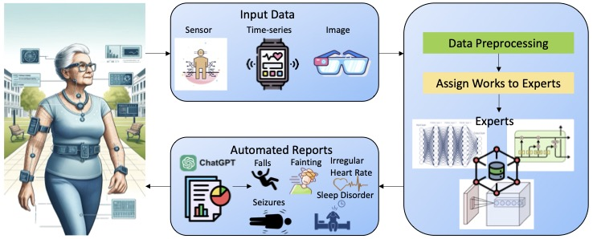

About Me
I am Dr. Liyuan Liu, an Assistant Professor in the Department of Decision & System Sciences at Saint Joseph’s University. With a rich portfolio of 30 peer-reviewed articles, my academic work is widely recognized within the fields of data science and analytics. My research spans AI algorithms in diverse applications such as marketing, healthcare, finance, human resource management, and education. I also focus on the design of incentive mechanisms in the big data era, data security and privacy, and FinTech innovations like blockchain.
Throughout my career, I have been honored with two Best Paper Awards and a Best Presenter Award at various international conferences. These accolades reflect my commitment to excellence in research and scholarship. Additionally, my dedication to teaching and student engagement has been recognized by Saint Joseph’s University Men's Basketball Team with the Most Valuable Professor Award, highlighting my impact beyond the classroom.
For more about my scholarly work, please visit my Google Scholar profile.
Outside the university, I balance my intellectual pursuits with personal passions. I’ve been playing the accordion for over 20 years and enjoy sharing music with my son Noah on the piano. I find relaxation in cooking diverse cuisines, dancing, and playing Majiang. My creative side is also expressed through writing Chinese prose, an art form in which I have won third place in a national competition. Reading remains a significant part of my life, with "The Crowd" being my favorite book, offering insights into human behavior that resonate deeply with my professional interests.
Research
Trust and Fairness Incentive Mechanism Design
Exploring novel incentive mechanisms that enforce fairness in data sharing and AI models, such as FairShare for federated learning and blockchain-based solutions for education and employment verification.
Blockchain Applications
Studies on how blockchain technology enhances security and trust in digital transactions, including public services like IoT and healthcare, improving IoT services through smart contracts, and blockchain in cybersecurity.
AI in Healthcare
Research on deploying deep learning models for predicting influenza trends and using AI for early detection of diseases through medical imaging, like the efficient segmentation model for histopathological analysis.
Cybersecurity and AI
Development of AI-driven solutions for cybersecurity challenges, including real-time attack detection systems using deep learning and defending against adversarial attacks in computer vision.
Business and AI
Investigating the transformative impact of AI on business, this research focuses on deploying machine learning algorithms to predict market trends, customer behavior, and optimize resource allocation. Studies include the use of HR analytics for managerial decisions and integrating AI with customer relationship management (CRM) systems to enhance user engagement and service delivery.
Sustainability and AI
Exploring the intersection of artificial intelligence and environmental sustainability, this research initiative focuses on leveraging AI to enhance eco-friendly practices across various sectors. Projects include the development of AI-driven systems for efficient resource management, energy consumption optimization, and the implementation of smart grid technologies to reduce environmental impact. The research also investigates the use of AI in forecasting and mitigating the effects of climate change, promoting a sustainable future through intelligent technological interventions.
Publications
- G. Dong, Z. Wang, Y. Chen, Y. Sun, H. Song, L. Liu, H. Cui (2024). An efficient segment anything model for the segmentation of medical images. Scientific Reports, 14(1), 19425. Link
- X. Zhang, F. Wang, Y. Chen, H. Zhang, L. Liu, Q. Wang (2024). Weld joint penetration state sequential identification algorithm based on representation learning of weld images. Journal of Manufacturing Processes, 120, 192-204. Link
- L. Liu, M. Han (2024). Data sharing and exchanging with incentive and optimization: a survey. Discover Data, 2(1), 2.Link
- L. Liu, Z. Ma, Y. Zhou, M. Fan, M. Han (2024). Trust in ESG Reporting: The Intelligent Veri-Green Solution for Incentivized Verification. Blockchain: Research and Applications, 100189. Link
- D. Jiao, F. Wang, Y. Chen, Q. Wang, L. Liu, M. Alam, X. Zhang (2024). Weld penetration state identification based on time series multi-source data fusion. Welding in the World, 100189. Link
- L. Liu, V. M. Miori, M. Han (2024). TopicShare: An AI and ChatGPT-based Data Sharing Framework on Teaching Content in Higher Education. The 2024 5th International Conference on Information Technology and Education Technology.
- L. Liu, M. Han (2024). EcoIntegrity: AI-Augmented Blockchain Framework for Carbon Footprint Tracking and Incentives in IoT. The 8th EAI International Conference on Smart Grid and Innovative Frontiers in Telecommunications (Best Paper Award).
- T. Xia, L. Liu (2024). LSN-GAN: A Novel Least Square Gradient Normalization for Generative Adversarial Networks. The 2024 IEEE 4th International Conference on Software Engineering and Artificial Intelligence (SEAI) (pp. 343-347). IEEE. Link
- K. Brutzman, Q. Burns, V. Cammisa, J. Peracchio, C. Phillips, K. Sarpong, L. Liu (2024). Integrating AI and ChatGPT in Wearable Devices for Enhanced Abnormal Activity Reporting: A Mixture of Experts Approach. In 2024 IEEE 4th International Conference on Software Engineering and Artificial Intelligence (SEAI) (pp. 231-235). IEEE. Link
- L. Liu, R. A. Mendoza, T. R. Martin, V. M. Miori (2024). Generative AI-Powered Educational Alignment: A Framework for Matching Syllabus Course Topics with Web Description. In Proceedings of the 2024 9th International Conference on Distance Education and Learning (pp. 340-346). Link
- Z. Wang, J. Huang, K. Miao, X. Lv, B. Su, L. Liu, M. Han (2023). Lightweight Zero-Knowledge Authentication Scheme for IoT Embedded Devices. Computer Networks. Link
- L. Liu, Y. Kong, G. Li, M. Han (2023). FairShare: An Incentive-based Fairness-aware Data Sharing Framework for Federated Learning. Proceeding in The 16th International Conference on Intelligent Robotics and Applications. Link
- L. Liu, M. Han (2023). WeatherPon: A Weather and Machine Learning-Based Coupon Recommendation Mechanism in Digital Marketing. Proceeding in the IEEE 3rd International Conference on Software Engineering and Artificial Intelligence. Link
- L. Liu, M. Han (2023). Deciphering the Influence of Mid-Term Examinations on Student Learning Outcomes: A Comprehensive Investigation Employing Statistical and Machine Learning Approaches. International Journal of Learning and Teaching. Link
- M. Han, D. Miao, J. Wang, L. Liu (2022). A Balm: Defend the Clique-based Attack from a Fundamental Aspect. Journal of Combinatorial Optimization. Link
- L. Liu, S. Akkineni, P. Story, C. Davis (2020). Using HR Analytics to Support Managerial Decisions: A Case Study. Proceeding in The Annual ACM Southeast Conference 2020. Link
- Y. Zhou, M. Han, J. He, S. He, X. Gao, L. Liu (2020). Abnormal Activity Detection in Edge Computing: A Transfer Learning Approach. Proceeding in The IEEE International Conference on Computing, Networking and Communications (ICNC). Link
- L. Liu, B. Yu, M. Han, S. Yuan, N. Wang (2019). Mild Cognitive Impairment Understanding: An Empirical Study by Data-driven Approach. BMC Bioinformatics. Link
- C. Wynn Sr, H. Ray, L. Liu (2019). The Relationship between Metacognitive Reflection, PBL, and Postformal Thinking among First-Year Learning Community Students. Learning Communities Research and Practice. Link
- L. Liu, J. Priestley, Y. Zhou, H. Ray, M. Han (2019). A2Text-Net: A Novel Deep Neural Network for Sarcasm Detection. The First IEEE International Conference on Cognitive Machine Intelligence. Link(Best Student Paper Award).
- Y. Zhou, M. Han, L. Liu, J. He, X. Gao (2019). The Adversarial Attacks Threats on Computer Vision: A Survey. Proceeding in The 16th IEEE International Conference on Mobile Ad-Hoc and Smart Systems Workshop. Link
- L. Liu, M. Han, Y. Zhou, R. Parizi (2019). E^2C-Chain: A Two-stage Incentive Education Employment and Skill Certification Blockchain. The 2nd IEEE International Conference on Blockchain (Blockchain-2019). Link
- L. Liu, M. Han (2019). Privacy and Security Issues in the 5G-Enabled Internet of Things. In 5G-Enabled Internet of Things. Link
- L. Liu, M. Han, Y. Zhou, R. Parizi (2019). Blockchain-based Certification for Education, Employment, and Skill with Incentive Mechanism. In Blockchain Cybersecurity, Trust, and Privacy. Link
- L. Liu, M. Han, Y. Zhou, Y. Wang (2018). LSTM Recurrent Neural Networks for Influenza Trends Prediction. Bioinformatics Research and Applications, ISBRA 2018. Link
- L. Liu, M. Han, Y. Wang, Y. Zhou (2018). Understanding Data Breach: A Visualization Aspect. Wireless Algorithms, Systems, and Applications, WASA 2018. Link
- Y. Zhou, M. Han, L. Liu, Y. Wang, Y. Liang, L. Tian (2018). Improving IoT Services in Smart-home Using Blockchain Smart Contract. IEEE International Conference on Internet of Things (iThings). Link
- M. Han, D. Miao, J. Wang, L. Liu (2018). Defend the Clique-based Attack for Data Privacy. International Conference on Combinatorial Optimization and Applications (COCOA). Link
Teaching
As an educator, I strive to blend theoretical knowledge with practical applications, preparing students to excel both academically and in their future careers. I teach Business Statistics and Machine Learning courses at Saint Joseph’s University, where I focus on making complex concepts accessible and engaging. My goal is not only to impart knowledge but also to inspire students to explore and innovate within the tech field.
Central to my teaching philosophy is the commitment to inclusivity and diversity. I am particularly passionate about encouraging students from underrepresented groups to pursue careers in STEM. By creating a supportive and welcoming classroom environment, I aim to empower these students, giving them the tools and confidence they need to succeed. This involves tailored mentorship, the creation of safe spaces for learning, and actively promoting diversity in all aspects of my work.
I believe that education should be transformative and adapt to the needs of a rapidly changing world. To this end, I incorporate real-world problems into the curriculum, allowing students to apply their learning in meaningful ways. This practical approach not only enhances understanding but also prepares students to be problem solvers and innovators in their future roles.
Moreover, I emphasize the importance of ethical considerations in technology and business. As my students learn to navigate the complex landscapes of machine learning and data analytics, I ensure they are also considering the social impacts of their work, fostering a sense of responsibility and ethical integrity.
My teaching methods have been recognized for their effectiveness, as evidenced by the Most Valuable Professor Award from the Saint Joseph's University Men's Basketball Team. This accolade reflects my commitment to student engagement and academic excellence, and it underscores the positive impact of inclusive education practices.
Impact of Teaching on Undergraduate Success
Study on Mid-term Examinations and Student Outcomes
Paper Title: "Deciphering the Influence of Mid-Term Examinations on Student Learning Outcomes: A Comprehensive Investigation Employing Statistical and Machine Learning Approaches"
It is widely recognized that mid-term examinations serve as a fundamental assessment method for evaluating students’ learning progress at the midpoint of a semester. While these exams are often correlated with final grades, our study diverges by focusing on the varying impacts of these assessments on different student groups within a Business Statistics course (DSS 210). Analyzing data from 171 students, we found that those who scored higher initially often relaxed towards the end, whereas those with lower scores increased their efforts, potentially leading to better final outcomes. This suggests a significant role of mid-term feedback in motivating changes in student study strategies. Additionally, a non-linear SVM model was employed to forecast final exam scores, highlighting the critical influence of mid-term performance on final results.
Read the paper
Generative AI in Educational Alignment
Paper Title: "Generative AI-Powered Educational Alignment: A Framework for Matching Syllabus Course Topics with Web Description"
The application of generative AI in education is revolutionizing how course contents are aligned with educational goals. Our research employed advanced AI models, including BERT and GPT-2, to analyze and ensure consistency between online course descriptions and the syllabi. By examining these elements through the lens of generative AI, the study identified discrepancies and provided recommendations for syllabus enhancement. This approach not only improves course delivery but also enhances student satisfaction and educational outcomes, demonstrating the practical benefits of AI in curriculum development.
Read the paper
Student Research Highlights
I am proud to announce that several of my DSS 451 (Machine Learning in Business Application I) and DSS 455 (Machine Learning in Business Application II) students have successfully published their research papers at the prestigious International Conference on Software Engineering and Artificial Intelligence (SEAI). This milestone is a testament to their hard work and the practical, research-driven approach we foster in our machine learning classes.
Paper Title: Integrating AI and ChatGPT in Wearable Devices for Enhanced Abnormal Activity Reporting: A Mixture of Experts Approach
The rapid advancement of Artificial Intelligence (AI) and Generative AI (GAI) has greatly enhanced the capabilities of wearable devices, extending their use beyond just senior independent living to a broader user base. These technologies excel at detecting abnormal activities, crucial for the timely identification of potential health emergencies. This functionality enables users and healthcare providers to monitor abnormalities effortlessly, though it also presents substantial challenges such as high computational demands and sustainability concerns in AI data centers. A significant challenge arises from the variability of data across different channels, which can lead to suboptimal predictions when relying on one-dimensional data. To address these issues, we have implemented a Mixture of Experts (MoE) approach, operating multiple AI models simultaneously, each tailored to the specific characteristics of the data they process. Our system includes ChatGPT for generating timely reports, a deep neural network for analyzing sensor data, a Convolutional Neural Network (CNN) for identifying patterns in image data, and a Recurrent Neural Network (RNN) for processing time-series data, capturing the dynamics inherent in physical activities. This integrated approach not only improves the accuracy of abnormal activity detection but also efficiently manages multichannel data, significantly reducing computational and electrical loads compared to traditional methods. This makes the wearable devices more effective and user-friendly, enhancing overall system performance and sustainability.
Read the full paperTeaching with Funs
In a delightful tradition from our Machine Learning class, students receive a special pen and nicknamed "Jiggly". After graduation, the student take Jiggly along on the adventures, photographing it in various global locations. I must admit, I'm a bit jealous of Jiggy’s adventures!